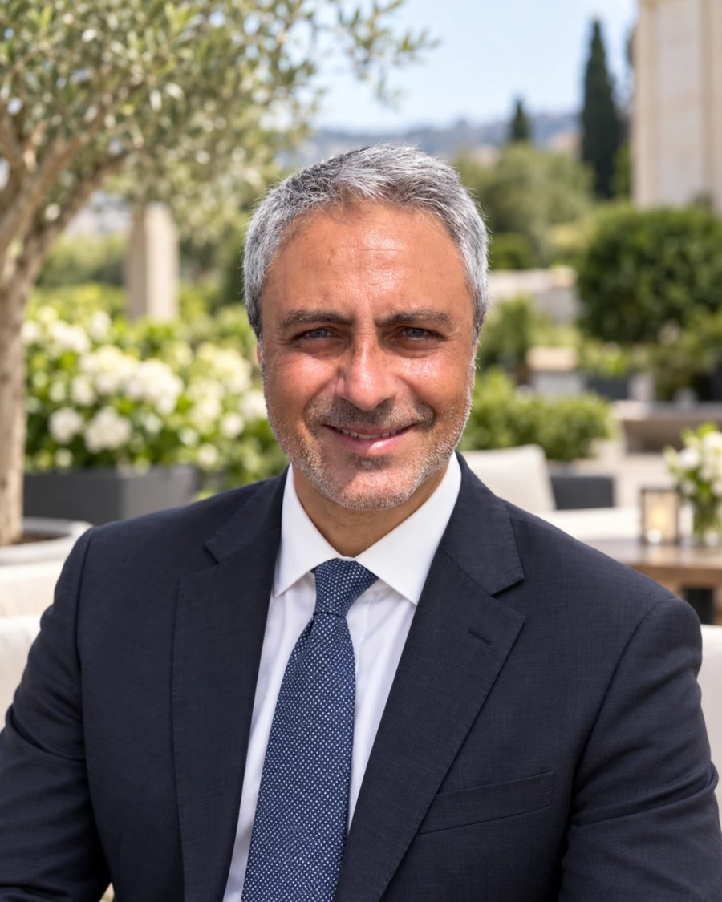

La quiete dei numeri.
Consulenza fiscale, societaria e giudiziaria. Due studi indipendenti ad Agrigento, Caltanissetta e Firenze, un unico modo di lavorare: con misura, senza fretta, con ogni numero letto da una persona.

Ogni impresa attraversa le stesse stagioni.
Un'impresa cresce come un ulivo: ha bisogno del terreno giusto, di acqua e misura, di innesti, di potature quando serve, e di chi la prosegue. In ogni stagione il network mette a disposizione il professionista più adatto.
Si sceglie il terreno giusto: forma societaria, statuto, regime fiscale, primi adempimenti.
Sei aree, un solo interlocutore.
Ogni area è seguita dal professionista del network che la pratica ogni giorno. Aprite una voce per vedere il referente e i servizi effettivamente svolti.
- Dichiarazioni dei redditi (730, Modello Redditi PF/SP/SC/ENC), IVA e LIPE
- Tax planning, crediti d'imposta (R&S, Transizione 4.0/5.0) e agevolazioni
- Fiscalità internazionale: transfer pricing, CFC, stabile organizzazione
- Convenzioni contro le doppie imposizioni, Quadro RW, IVIE e IVAFE
- Contenzioso tributario: ricorsi, accertamento con adesione, autotutela
- Assistenza in verifiche fiscali (Guardia di Finanza e Agenzia delle Entrate)
- Interpelli, mediazione, conciliazione e rappresentanza in giudizio
- Fatturazione elettronica, corrispettivi telematici, ravvedimenti operosi
- Contabilità ordinaria, semplificata, per professionisti e forfetari
- Bilancio d'esercizio, consolidato, infrannuale e reporting ESG
- Analisi di bilancio per indici e flussi, deposito alla Camera di Commercio
- Revisione legale dei conti ai sensi del D.Lgs. 39/2010
- Sindaco unico o membro del collegio sindacale
- Organismo di Vigilanza ex D.Lgs. 231/2001
- Audit interni e verifica della continuità aziendale
- Adeguati assetti organizzativi, amministrativi e contabili
- Costituzione di SRL, SPA, SAS, SNC, cooperative, startup e PMI innovative
- Statuti, patti parasociali, contrattualistica commerciale
- Fusioni, scissioni, trasformazioni omogenee ed eterogenee
- Conferimenti, cessioni e acquisizioni d'azienda, due diligence
- Valutazione d'azienda, perizie di stima, LBO e MBO
- Business plan, finanziamenti agevolati (Smart&Start, Resto al Sud)
- Equity crowdfunding, work for equity e piani di stock option
- Assemblee, verbali, aumenti di capitale, dividendi
- Controllo di gestione, budget, KPI e previsioni di cassa
- Rapporti bancari, Centrale Rischi, finanza agevolata e bandi
- Buste paga, gestione del personale, CCNL e welfare
- Contributi INPS/INAIL, TFR, ammortizzatori sociali, vertenze
- Successioni, volture catastali, donazioni e imposte di registro
- Passaggio generazionale, patto di famiglia, family buy-out
- Trust, holding familiari, fondo patrimoniale, protezione patrimoniale
- Consulenza per professionisti, immobiliare, agricoltura e sanità
- Composizione negoziata della crisi e piani di risanamento
- Concordato preventivo, accordi di ristrutturazione, transazione fiscale
- Sovraindebitamento, liquidazione controllata, esdebitazione
- Incarichi di curatore, commissario giudiziale, attestatore
- Perizie di stima giurate e non giurate, valutazioni e rivalutazioni
- Consulenze tecniche d'ufficio presso i Tribunali e di parte
- Arbitrato societario e commerciale, mediazione civile
- Quantificazione di danni patrimoniali e perizie assicurative
- Costituzione e gestione di ETS, APS, ODV, fondazioni e iscrizione al RUNTS
- Costituzione di ASD/SSD, Riforma dello Sport, regime L. 398/91
- 5 per mille, raccolta fondi, lavoratori sportivi
- Antiriciclaggio, adeguata verifica e segnalazioni
- Adeguamento GDPR, DPO, Modello Organizzativo 231
- Fatturazione elettronica, PEC, firma digitale, SPID
- E-commerce, regime OSS/IOSS, adempimenti doganali
- Domiciliazione legale e fiscale, conservazione a norma
Più professionalità, un impegno comune.
Ciascun professionista opera dal proprio studio, con la propria responsabilità e la propria copertura assicurativa. Il network mette in comune competenze, aggiornamento e metodo: il rapporto resta sempre con la persona. In tutte le sedi si riceve esclusivamente su appuntamento.
Giuseppe Antonio Marotta
Consulenza fiscale e tributaria, operazioni straordinarie, contenzioso e revisione contabile. Segue imprese e professionisti in Sicilia e clienti in tutta Italia.
Albo dei Dottori Commercialisti ed Esperti Contabili · Registro dei Revisori Legali
- Consulenza fiscale e internazionale
- Operazioni straordinarie
- Contenzioso tributario
- Revisione legale
Via San Vito, 2
92100 Agrigento (AG)
- Telefono
- +39 349 3461219
- dott.gmarotta@gmail.com
- PEC
- dott.gmarotta@pec.it
Antonio Balsamo
Crisi d'impresa, ristrutturazione e attività giudiziaria, con incarichi come ausiliario dei Giudici presso i Tribunali; consulenza aziendale, fiscalità internazionale e startup innovative.
Albo dei Dottori Commercialisti ed Esperti Contabili · Registro dei Revisori Legali · Ausiliario del Giudice presso i Tribunali
- Crisi d'impresa e ristrutturazione
- Incarichi giudiziari e perizie
- Consulenza aziendale e patrimonio
- Fiscalità internazionale
Via J. F. Kennedy, 21
93100 Caltanissetta (CL)
- Telefono
- +39 0934 24831
- Mobile
- +39 320 6563661
- info@studiobalsamo.com
- PEC
- dott.antonio.balsamo@pec.it
Via Bisenzio
50127 Firenze (FI)
- Mobile
- +39 320 6563661
- info@studiobalsamo.com
Ciascun professionista opera con proprio studio individuale, propria partita IVA e propria copertura assicurativa professionale. La collaborazione nell'ambito del network "Il Tuo Commercialista" non configura un'associazione professionale né uno studio associato. Il rapporto contrattuale si instaura esclusivamente con il singolo professionista incaricato.